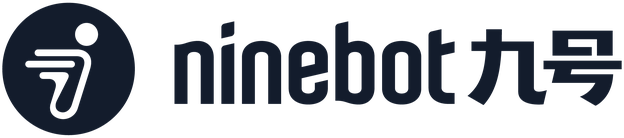
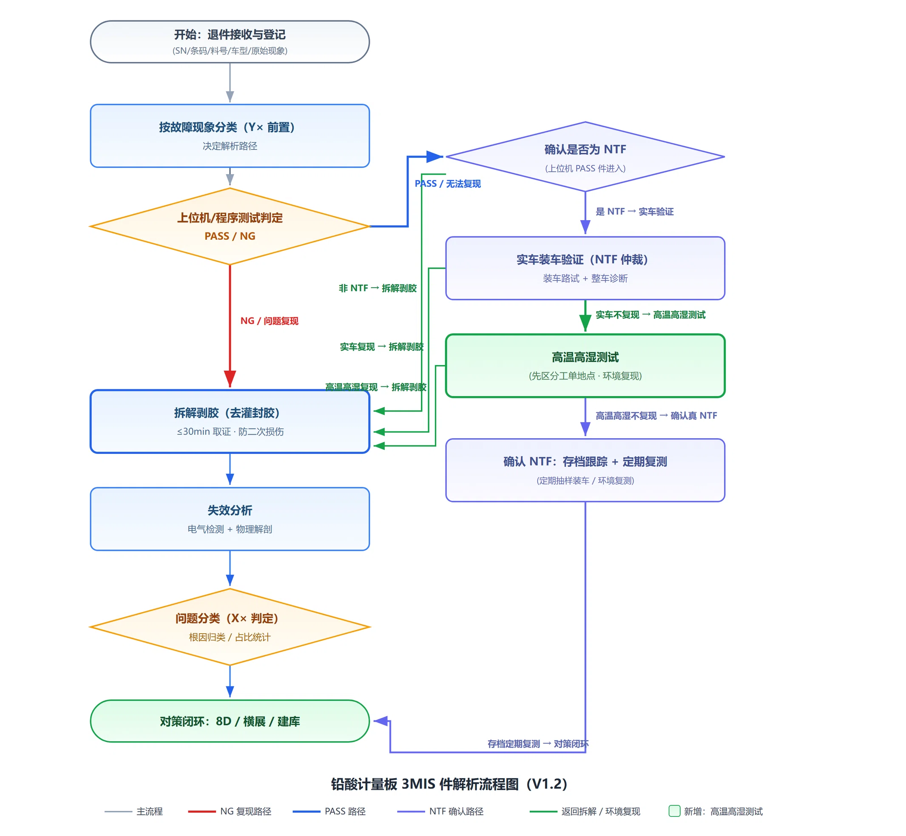

CONTENTS
汇报框架
入职 2026.05 · 三电组 ｜ 铅酸计量板＋65A 平台化三款 · 华瑞 / 易宏
01 岗位与融入
三电组 · 铅酸计量板 SQE 的角色与学习路径
02 专项攻坚
3MIS 归因 · 解析 SOP · 进水验证 · 工艺对比
03 AI 赋能
知识库 · 飞书机器人「Q野」· 数据自动化工作流
04 建设性意见
基于 5,700+ 条解析数据的供应商管理六条建议
05 反思与规划
短板认知与 2026 H2 行动计划

电动车事业部入职 2026.05 · 三电组 ｜ 铅酸计量板＋65A 平台化三款 · 华瑞 / 易宏
三电组 · 铅酸计量板 SQE 的角色与学习路径
3MIS 归因 · 解析 SOP · 进水验证 · 工艺对比
知识库 · 飞书机器人「Q野」· 数据自动化工作流
基于 5,700+ 条解析数据的供应商管理六条建议
短板认知与 2026 H2 行动计划
王可欣师父的带教方式：从「跟着看」→「一起做」→「独立干」——点击节点查看每一步
产出：基于 CQE 售后台账明细（0906 拉取 · 5,564 条）的 12 维度交叉归因报告 ＋ P0 建议：四代板来料审核 · 易宏通讯专项 · 固件 0426 排查 · 广东区域分析（数据源：CQE 后台导出；本人贡献为数据分析与归因，非全量实物解析）

退件先登记（SN/条码/车型/现象）→ 按故障现象分类，决定走哪条解析路 → 上位机测试分出 PASS / NG → NG 的 30 分钟内拆解剥胶取证（防二次损伤）→ 失效分析定位原因 → 归入 X1–X5 → 8D / 横展 / 建库闭环
NTF =「公司测试 PASS，装到车上却有问题」的疑难件。判定过三关：上位机 PASS → 装车路试 → 物理检查。实车说了算——测试 PASS 不代表真没问题，杜绝「PASS 即放行」。V1.2 起新增高温高湿测试环节，确认 NTF 的件定期抽样复测
五类失效定性（X 分型）＋ NTF 判定三重仲裁——先定性、再仲裁、后闭环
硬件真实故障
已定位失效器件（C4/Q1、U5、焊点）
单线通讯异常
间歇性 / 工况触发（工单口径 E18 占 34.7%）
NTF 无法复现
上位机 PASS ＋ 实车不现（易宏 48.7% / 华瑞 35.5%）
非计量板误判
实为仪表 / 线束 / 稳压电源（华瑞 22.7%）
标签缺失
无法追溯、无法归类（易宏曾达 35.3%）
⚙ 工程化：AI 辅助流程图与文档生成——改一处逻辑即自动重出版本，上一页的流程图即出自该工作流
| 优化项 | 镭雕版做法 | 易宏 / 华瑞痛点 |
|---|---|---|
| 前置：二维码镭雕 | 第 1 步镭雕上盖，追溯链贯穿烧录 / 校准 / 入库全流程 | 易宏第 13 步才绑码，前 12 道工序无追溯码关联，靠末段补绑 |
| 延后①：分板时机 | 校准测试后再分板，八拼板批量烧录＋校准，免逐板扫码 | 易宏第 2 步即分板，单板进 DIP 逐板操作效率低 |
| 延后②：装上盖 | 灌胶后装盖，灌胶质量可视检＋静置 8h 写进基线 | 易宏灌胶前装盖，灌胶后不可视检，且未明确静置标准 |
| 合并：DIP 工序 | 5 道 → 2 道：插件波峰焊＋焊点全检，兼顾特殊特性管控 | 易宏拆 5 道细分（上下板/插件/炉前检/波峰焊/炉后检），粒度冗余 |
沉淀：铅酸计量板 SIE 基线 V1（易宏 PPAP 全量萃取）· 工艺参数基线（波峰焊 260–275℃ / 灌胶 AB 5:1）· 华瑞二供路试不合格案例卡
价值：知识从「个人电脑」变「部门资产」——检索秒级响应 · 结论可追溯（锚定文件 / 版本 / 日期）· 新人一周掌握工作框架与案例库
自然语言检索 15 个知识域，秒级定位标准 / 案例 / 参数
飞书接收文件 → 查重 → 智能判断归属知识域 → 自动归位
22 项交付物核对 + 品类关注点提示（控制器 / 电机 / 计量板）
Excel → 分析 → 网页看板，报告一键回传飞书
会议 / 待办 / 异常单到期提醒
工程化：15 个飞书技能完成 DeepSeek Harness 适配（日程 / 会议 / 邮件 / 文档 / 表格 / 待办等），技能资产可复用可分享
Excel / 飞书表格 / 台账
多表合并 · 交叉校验
PPM / DPPM / 排名 / 分级
HTML 报告 · 图表联动
沉淀可检索资产
用 AI 开发实用插件（检索 / 看板 / 预警 / 审核辅助），让每位同事都有用得上的工具
插件统一部署：一处安装，全员即装即用；技能资产可复用、可分享、可迭代
文件归档 / 报告生成 / 数据看板先行，低门槛上手，先尝到甜头
查标准 / 出报告 / 发提醒都走 AI 插件，形成肌肉记忆，像用飞书一样自然
个人实践：尽调 20min→1min、汇总 30min→2min、同步全自动；「Q野」＋15 个飞书技能已验证
人人有插件、事事有沉淀，经验资产化，效率持续复利，从三电组走向全部门
九号知识库（2,341 文件）· 飞书机器人「Q野」· NTF 专项报告 · 失效件解析 SOP V1.3